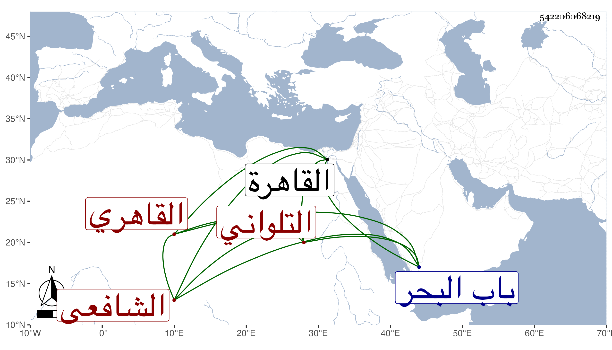

0902Sakhawi.DawLamic.ITO20230111-ara1.EIS1600.542206068219
Biography ID: 542206068219
إبراهيم بن علي بن عمر بن حسن بن حسين محب الدين وبرهان الدين أبو الوفاء بن النور التلواني الأصل القاهري الشافعي نزيل جامع الأقمر ويعرف كأبيه بالتلواني . ولد في سنة اثنتي عشرة وثمانمائة بالقاهرة ونشأ بها فحفظ القرآن عند الجمال البدراني والمنهاج الفرعي والألفيتين وجمع الجوامع وعرض على شيخنا ووالده وابن البلقيني وآخرين واشتغل يسيرا في الفقه على الونائي والسراج الدموشي فيما قال وفي العربية على العز عبد السلام البغدادي وغيره ولبس الخرقة من الزين رمضان الأدكاوي وأجاز له وهو طفل باستدعاء مؤرخ بجمادى الأولى سنة أربع عشرة الشرف بن الكويك والجمال عبد الله الحنبلي واستجيز في بعض الاستدعاآت بل ربما حدث وحج في سنة ثلاث وثلاثين ودرس بجامع المقس في باب البحر وكذا بالحاجبية وجرت له كائنة بسبب أوقافه وتكلم في جامع الأقمر وولى مشيخة الرباط بالبيبرسية ورغب عنها بأخرة في سنة تسع وثمانين لعبد القادر بن النقيب وهو إنسان لين الجانب تجرع بعد ما أشير إليه فاقة سيما حين توجه بسببها لملاقاة السيد الكردي ليعينه فيها فإنه سقط وانكسر بعض أعضائه . مات في سنة سبع وتسعين رحمه الله وإيانا .
